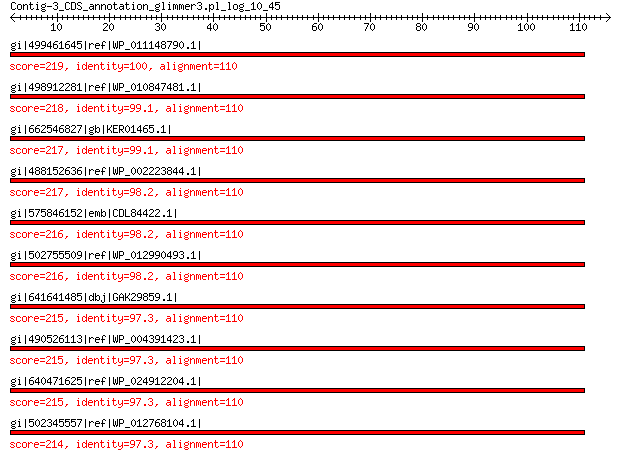

bitscore colors: <40, 40-50 , 50-80, 80-200, >200
 BLASTP 2.2.31+
Reference: Stephen F. Altschul, Thomas L. Madden, Alejandro A.
Schaffer, Jinghui Zhang, Zheng Zhang, Webb Miller, and David J.
Lipman (1997), "Gapped BLAST and PSI-BLAST: a new generation of
protein database search programs", Nucleic Acids Res. 25:3389-3402.
Reference for composition-based statistics: Alejandro A. Schaffer,
L. Aravind, Thomas L. Madden, Sergei Shavirin, John L. Spouge, Yuri
I. Wolf, Eugene V. Koonin, and Stephen F. Altschul (2001),
"Improving the accuracy of PSI-BLAST protein database searches with
composition-based statistics and other refinements", Nucleic Acids
Res. 29:2994-3005.
Database: All non-redundant GenBank CDS translations+PDB+SwissProt+PIR+PRF
excluding environmental samples from WGS projects
49,011,213 sequences; 17,563,301,199 total letters
Query= Contig-3_CDS_annotation_glimmer3.pl_log_10_45
Length=115
Score E
Sequences producing significant alignments: (Bits) Value
gi|499461645|ref|WP_011148790.1| MULTISPECIES: 50S ribosomal pro... 219 3e-71
gi|498912281|ref|WP_010847481.1| 50S ribosomal protein L22 218 9e-71
gi|662546827|gb|KER01465.1| LSU ribosomal protein L22P 217 2e-70
gi|488152636|ref|WP_002223844.1| MULTISPECIES: 50S ribosomal pro... 217 3e-70
gi|575846152|emb|CDL84422.1| 50S ribosomal protein L22 216 6e-70
gi|502755509|ref|WP_012990493.1| 50S ribosomal protein L22 216 8e-70
gi|641641485|dbj|GAK29859.1| 50S ribosomal protein L22 215 2e-69
gi|490526113|ref|WP_004391423.1| MULTISPECIES: 50S ribosomal pro... 215 2e-69
gi|640471625|ref|WP_024912204.1| 50S ribosomal protein L22 215 2e-69
gi|502345557|ref|WP_012768104.1| MULTISPECIES: 50S ribosomal pro... 214 2e-69
>gi|499461645|ref|WP_011148790.1| MULTISPECIES: 50S ribosomal protein L22 [Photorhabdus]
gi|37528538|ref|NP_931883.1| 50S ribosomal protein L22 [Photorhabdus luminescens subsp. laumondii
TTO1]
gi|253991683|ref|YP_003043039.1| 50S ribosomal protein L22 [Photorhabdus asymbiotica]
gi|51316750|sp|Q7MYF6.1|RL22_PHOLL RecName: Full=50S ribosomal protein L22 [Photorhabdus luminescens
subsp. laumondii TTO1]
gi|36787976|emb|CAE17093.1| 50S ribosomal protein L22 [Photorhabdus luminescens subsp. laumondii
TTO1]
gi|253783133|emb|CAQ86298.1| 50S ribosomal protein L22 [Photorhabdus asymbiotica]
gi|530711216|gb|EQC02077.1| 50S ribosomal protein L22 [Photorhabdus temperata subsp. temperata
M1021]
gi|550875190|gb|ERT14223.1| 50S ribosomal protein L22 [Photorhabdus temperata J3]
gi|572731296|gb|ETS29485.1| LSU ribosomal protein L22P [Photorhabdus temperata subsp. khanii
NC19]
gi|604177082|gb|EYU13823.1| LSU ribosomal protein L22P [Photorhabdus luminescens BA1]
Length=110
Score = 219 bits (558), Expect = 3e-71, Method: Compositional matrix adjust.
Identities = 110/110 (100%), Positives = 110/110 (100%), Gaps = 0/110 (0%)
Query 1 METIAKHRHARSSAQKVRLVADLIRGKKVSQALETLTYTNKKAAGLVKKVLESAIANAEH 60
METIAKHRHARSSAQKVRLVADLIRGKKVSQALETLTYTNKKAAGLVKKVLESAIANAEH
Sbjct 1 METIAKHRHARSSAQKVRLVADLIRGKKVSQALETLTYTNKKAAGLVKKVLESAIANAEH 60
Query 61 NDGADIDDLKVTKIFVDEGPTMKRIMPRAKGRADRILKRSSHITVVVSDR 110
NDGADIDDLKVTKIFVDEGPTMKRIMPRAKGRADRILKRSSHITVVVSDR
Sbjct 61 NDGADIDDLKVTKIFVDEGPTMKRIMPRAKGRADRILKRSSHITVVVSDR 110
>gi|498912281|ref|WP_010847481.1| 50S ribosomal protein L22 [Xenorhabdus nematophila]
gi|300721370|ref|YP_003710641.1| 50S ribosomal protein L22 [Xenorhabdus nematophila ATCC 19061]
gi|297627858|emb|CBJ88404.1| 50S ribosomal subunit protein L22 [Xenorhabdus nematophila ATCC
19061]
gi|484362892|emb|CCW30281.1| 50S ribosomal protein L22 [Xenorhabdus nematophila F1]
gi|661559762|emb|CDG15993.1| 50S ribosomal protein L22 [Xenorhabdus doucetiae]
gi|661566769|emb|CDG23171.1| 50S ribosomal protein L22 [Xenorhabdus poinarii G6]
Length=110
Score = 218 bits (556), Expect = 9e-71, Method: Compositional matrix adjust.
Identities = 109/110 (99%), Positives = 110/110 (100%), Gaps = 0/110 (0%)
Query 1 METIAKHRHARSSAQKVRLVADLIRGKKVSQALETLTYTNKKAAGLVKKVLESAIANAEH 60
METIAKHRHARSSAQKVRLVADLIRGKKVSQALETLTYTNKKAAGLVKKVLESAIANAEH
Sbjct 1 METIAKHRHARSSAQKVRLVADLIRGKKVSQALETLTYTNKKAAGLVKKVLESAIANAEH 60
Query 61 NDGADIDDLKVTKIFVDEGPTMKRIMPRAKGRADRILKRSSHITVVVSDR 110
NDGADIDDLKVTKIFVDEGPTMKRIMPRAKGRADRILKR+SHITVVVSDR
Sbjct 61 NDGADIDDLKVTKIFVDEGPTMKRIMPRAKGRADRILKRTSHITVVVSDR 110
>gi|662546827|gb|KER01465.1| LSU ribosomal protein L22P [Photorhabdus temperata subsp. temperata
Meg1]
Length=110
Score = 217 bits (553), Expect = 2e-70, Method: Compositional matrix adjust.
Identities = 109/110 (99%), Positives = 109/110 (99%), Gaps = 0/110 (0%)
Query 1 METIAKHRHARSSAQKVRLVADLIRGKKVSQALETLTYTNKKAAGLVKKVLESAIANAEH 60
ME IAKHRHARSSAQKVRLVADLIRGKKVSQALETLTYTNKKAAGLVKKVLESAIANAEH
Sbjct 1 MEIIAKHRHARSSAQKVRLVADLIRGKKVSQALETLTYTNKKAAGLVKKVLESAIANAEH 60
Query 61 NDGADIDDLKVTKIFVDEGPTMKRIMPRAKGRADRILKRSSHITVVVSDR 110
NDGADIDDLKVTKIFVDEGPTMKRIMPRAKGRADRILKRSSHITVVVSDR
Sbjct 61 NDGADIDDLKVTKIFVDEGPTMKRIMPRAKGRADRILKRSSHITVVVSDR 110
>gi|488152636|ref|WP_002223844.1| MULTISPECIES: 50S ribosomal protein L22 [Enterobacteriaceae]
gi|22127864|ref|NP_671287.1| 50S ribosomal protein L22 [Yersinia pestis KIM10+]
gi|45440072|ref|NP_991611.1| 50S ribosomal protein L22 [Yersinia pestis biovar Microtus str.
91001]
gi|51597983|ref|YP_072174.1| 50S ribosomal protein L22 [Yersinia pseudotuberculosis IP 32953]
gi|108809249|ref|YP_653165.1| 50S ribosomal protein L22 [Yersinia pestis Antiqua]
gi|108814014|ref|YP_649781.1| 50S ribosomal protein L22 [Yersinia pestis Nepal516]
gi|145597457|ref|YP_001161532.1| 50S ribosomal protein L22 [Yersinia pestis Pestoides F]
gi|153949774|ref|YP_001402858.1| 50S ribosomal protein L22 [Yersinia pseudotuberculosis IP 31758]
gi|162419522|ref|YP_001605180.1| 50S ribosomal protein L22 [Yersinia pestis Angola]
gi|170022549|ref|YP_001719054.1| 50S ribosomal protein L22 [Yersinia pseudotuberculosis YPIII]
gi|186897179|ref|YP_001874291.1| 50S ribosomal protein L22 [Yersinia pseudotuberculosis PB1/+]
gi|218927420|ref|YP_002345295.1| 50S ribosomal protein L22 [Yersinia pestis CO92]
gi|294502293|ref|YP_003566355.1| 50S ribosomal protein L22 [Yersinia pestis Z176003]
gi|384120777|ref|YP_005503397.1| 50S ribosomal protein L22 [Yersinia pestis D106004]
gi|384124661|ref|YP_005507275.1| 50S ribosomal protein L22 [Yersinia pestis D182038]
gi|384137809|ref|YP_005520511.1| 50S ribosomal protein L22 [Yersinia pestis A1122]
gi|384412843|ref|YP_005622205.1| 50S ribosomal protein L22 [Yersinia pestis biovar Medievalis
str. Harbin 35]
gi|440232834|ref|YP_007346627.1| LSU ribosomal protein L22P [Serratia marcescens FGI94]
gi|448244251|ref|YP_007408304.1| 50S ribosomal subunit protein L22 [Serratia marcescens WW4]
gi|525690131|ref|YP_008232481.1| 50S ribosomal protein L22 [Serratia liquefaciens ATCC 27592]
gi|51316889|sp|Q8ZJA7.1|RL22_YERPE RecName: Full=50S ribosomal protein L22 [Yersinia pestis]
gi|81691631|sp|Q664S6.1|RL22_YERPS RecName: Full=50S ribosomal protein L22 [Yersinia pseudotuberculosis
IP 32953]
gi|123073064|sp|Q1CCU9.1|RL22_YERPN RecName: Full=50S ribosomal protein L22 [Yersinia pestis Nepal516]
gi|123245522|sp|Q1C2V2.1|RL22_YERPA RecName: Full=50S ribosomal protein L22 [Yersinia pestis Antiqua]
gi|166222009|sp|A4TGZ7.1|RL22_YERPP RecName: Full=50S ribosomal protein L22 [Yersinia pestis Pestoides
F]
gi|166986976|sp|A7FNN0.1|RL22_YERP3 RecName: Full=50S ribosomal protein L22 [Yersinia pseudotuberculosis
IP 31758]
gi|226734756|sp|B2K5M5.1|RL22_YERPB RecName: Full=50S ribosomal protein L22 [Yersinia pseudotuberculosis
PB1/+]
gi|226734757|sp|A9R901.1|RL22_YERPG RecName: Full=50S ribosomal protein L22 [Yersinia pestis Angola]
gi|226734758|sp|B1JIW6.1|RL22_YERPY RecName: Full=50S ribosomal protein L22 [Yersinia pseudotuberculosis
YPIII]
gi|21960999|gb|AAM87538.1|AE014002_11 50S ribosomal subunit protein L22 [Yersinia pestis KIM10+]
gi|45434927|gb|AAS60488.1| 50S ribosomal protein L22 [Yersinia pestis biovar Microtus str.
91001]
gi|51591265|emb|CAH22931.1| 50S ribosomal protein L22 [Yersinia pseudotuberculosis IP 32953]
gi|108777662|gb|ABG20181.1| LSU ribosomal protein L22P [Yersinia pestis Nepal516]
gi|108781162|gb|ABG15220.1| LSU ribosomal protein L22P [Yersinia pestis Antiqua]
gi|115346031|emb|CAL18897.1| 50S ribosomal protein L22 [Yersinia pestis CO92]
gi|145209153|gb|ABP38560.1| LSU ribosomal protein L22P [Yersinia pestis Pestoides F]
gi|149290146|gb|EDM40223.1| 50S ribosomal protein L22 [Yersinia pestis CA88-4125]
gi|152961269|gb|ABS48730.1| ribosomal protein L22 [Yersinia pseudotuberculosis IP 31758]
gi|162352337|gb|ABX86285.1| ribosomal protein L22 [Yersinia pestis Angola]
gi|165990516|gb|EDR42817.1| ribosomal protein L22 [Yersinia pestis biovar Antiqua str. E1979001]
gi|166205464|gb|EDR49944.1| ribosomal protein L22 [Yersinia pestis biovar Antiqua str. B42003004]
gi|167055410|gb|EDR65204.1| ribosomal protein L22 [Yersinia pestis biovar Mediaevalis str.
K1973002]
gi|169749083|gb|ACA66601.1| ribosomal protein L22 [Yersinia pseudotuberculosis YPIII]
gi|186700205|gb|ACC90834.1| ribosomal protein L22 [Yersinia pseudotuberculosis PB1/+]
gi|229678664|gb|EEO74769.1| 50S ribosomal subunit protein L22 [Yersinia pestis Nepal516]
gi|229690464|gb|EEO82518.1| 50S ribosomal subunit protein L22 [Yersinia pestis biovar Orientalis
str. India 195]
gi|229696438|gb|EEO86485.1| 50S ribosomal subunit protein L22 [Yersinia pestis biovar Orientalis
str. PEXU2]
gi|229706372|gb|EEO92379.1| 50S ribosomal subunit protein L22 [Yersinia pestis Pestoides
A]
gi|238727797|gb|EEQ19321.1| hypothetical protein yinte0001_36010 [Yersinia intermedia ATCC
29909]
gi|262360373|gb|ACY57094.1| 50S ribosomal protein L22 [Yersinia pestis D106004]
gi|262364325|gb|ACY60882.1| 50S ribosomal protein L22 [Yersinia pestis D182038]
gi|291424216|gb|EFE97431.1| ribosomal protein L22 [Serratia odorifera DSM 4582]
gi|294352752|gb|ADE63093.1| 50S ribosomal protein L22 [Yersinia pestis Z176003]
gi|320013347|gb|ADV96918.1| 50S ribosomal subunit protein L22 [Yersinia pestis biovar Medievalis
str. Harbin 35]
gi|320029535|gb|EFW11564.1| 50S ribosomal subunit protein L22 [Serratia symbiotica str. Tucson]
gi|342852938|gb|AEL71491.1| 50S ribosomal protein L22 [Yersinia pestis A1122]
gi|391433203|gb|EIQ94560.1| ribosomal protein L22 [Yersinia pestis PY-01]
gi|391434031|gb|EIQ95275.1| ribosomal protein L22 [Yersinia pestis PY-02]
gi|391436828|gb|EIQ97748.1| ribosomal protein L22 [Yersinia pestis PY-03]
gi|391449099|gb|EIR08848.1| ribosomal protein L22 [Yersinia pestis PY-04]
gi|391449679|gb|EIR09377.1| ribosomal protein L22 [Yersinia pestis PY-05]
gi|391451917|gb|EIR11373.1| ribosomal protein L22 [Yersinia pestis PY-06]
gi|391465090|gb|EIR23313.1| ribosomal protein L22 [Yersinia pestis PY-07]
gi|391466616|gb|EIR24672.1| ribosomal protein L22 [Yersinia pestis PY-08]
gi|391468763|gb|EIR26605.1| ribosomal protein L22 [Yersinia pestis PY-09]
gi|391482543|gb|EIR38985.1| ribosomal protein L22 [Yersinia pestis PY-10]
gi|391483060|gb|EIR39455.1| ribosomal protein L22 [Yersinia pestis PY-12]
gi|391483444|gb|EIR39803.1| ribosomal protein L22 [Yersinia pestis PY-11]
gi|391497343|gb|EIR52210.1| ribosomal protein L22 [Yersinia pestis PY-13]
gi|391498350|gb|EIR53131.1| ribosomal protein L22 [Yersinia pestis PY-15]
gi|391501847|gb|EIR56207.1| ribosomal protein L22 [Yersinia pestis PY-14]
gi|391512956|gb|EIR66228.1| ribosomal protein L22 [Yersinia pestis PY-16]
gi|391514570|gb|EIR67662.1| ribosomal protein L22 [Yersinia pestis PY-19]
gi|391516207|gb|EIR69123.1| ribosomal protein L22 [Yersinia pestis PY-25]
gi|391528621|gb|EIR80422.1| ribosomal protein L22 [Yersinia pestis PY-29]
gi|391531494|gb|EIR82986.1| ribosomal protein L22 [Yersinia pestis PY-34]
gi|391545623|gb|EIR95689.1| ribosomal protein L22 [Yersinia pestis PY-36]
gi|391547351|gb|EIR97255.1| ribosomal protein L22 [Yersinia pestis PY-42]
gi|391548057|gb|EIR97893.1| ribosomal protein L22 [Yersinia pestis PY-45]
gi|391561679|gb|EIS10185.1| ribosomal protein L22 [Yersinia pestis PY-46]
gi|391562800|gb|EIS11178.1| ribosomal protein L22 [Yersinia pestis PY-47]
gi|391564946|gb|EIS13103.1| ribosomal protein L22 [Yersinia pestis PY-48]
gi|391577096|gb|EIS23565.1| ribosomal protein L22 [Yersinia pestis PY-52]
gi|391577930|gb|EIS24271.1| ribosomal protein L22 [Yersinia pestis PY-53]
gi|391589085|gb|EIS34026.1| ribosomal protein L22 [Yersinia pestis PY-55]
gi|391592671|gb|EIS37060.1| ribosomal protein L22 [Yersinia pestis PY-54]
gi|391593209|gb|EIS37538.1| ribosomal protein L22 [Yersinia pestis PY-56]
gi|391606011|gb|EIS48793.1| ribosomal protein L22 [Yersinia pestis PY-60]
gi|391607981|gb|EIS50519.1| ribosomal protein L22 [Yersinia pestis PY-58]
gi|391608675|gb|EIS51140.1| ribosomal protein L22 [Yersinia pestis PY-59]
gi|391620633|gb|EIS61766.1| ribosomal protein L22 [Yersinia pestis PY-61]
gi|391621544|gb|EIS62572.1| ribosomal protein L22 [Yersinia pestis PY-63]
gi|391629976|gb|EIS69813.1| ribosomal protein L22 [Yersinia pestis PY-64]
gi|391632080|gb|EIS71645.1| ribosomal protein L22 [Yersinia pestis PY-65]
gi|391646118|gb|EIS83909.1| ribosomal protein L22 [Yersinia pestis PY-72]
gi|391649578|gb|EIS86950.1| ribosomal protein L22 [Yersinia pestis PY-66]
gi|391655915|gb|EIS92598.1| ribosomal protein L22 [Yersinia pestis PY-76]
gi|391662880|gb|EIS98775.1| ribosomal protein L22 [Yersinia pestis PY-88]
gi|391667975|gb|EIT03251.1| ribosomal protein L22 [Yersinia pestis PY-89]
gi|391669431|gb|EIT04561.1| ribosomal protein L22 [Yersinia pestis PY-90]
gi|391673060|gb|EIT07815.1| ribosomal protein L22 [Yersinia pestis PY-91]
gi|391687096|gb|EIT20442.1| ribosomal protein L22 [Yersinia pestis PY-93]
gi|391688684|gb|EIT21879.1| ribosomal protein L22 [Yersinia pestis PY-92]
gi|391689977|gb|EIT23053.1| ribosomal protein L22 [Yersinia pestis PY-94]
gi|391701231|gb|EIT33255.1| ribosomal protein L22 [Yersinia pestis PY-95]
gi|391704417|gb|EIT36076.1| ribosomal protein L22 [Yersinia pestis PY-96]
gi|391705020|gb|EIT36620.1| ribosomal protein L22 [Yersinia pestis PY-98]
gi|391715889|gb|EIT46388.1| ribosomal protein L22 [Yersinia pestis PY-99]
gi|391721229|gb|EIT51183.1| ribosomal protein L22 [Yersinia pestis PY-101]
gi|391731677|gb|EIT60346.1| ribosomal protein L22 [Yersinia pestis PY-102]
gi|391734409|gb|EIT62670.1| ribosomal protein L22 [Yersinia pestis PY-103]
gi|391737508|gb|EIT65385.1| ribosomal protein L22 [Yersinia pestis PY-113]
gi|411177960|gb|EKS47972.1| 50S ribosomal protein L22 [Yersinia pestis INS]
gi|440054539|gb|AGB84442.1| LSU ribosomal protein L22P [Serratia marcescens FGI94]
gi|445214615|gb|AGE20285.1| 50S ribosomal subunit protein L22 [Serratia marcescens WW4]
gi|453066290|gb|EMF07239.1| 50S ribosomal protein L22 [Serratia marcescens VGH107]
gi|523439950|gb|AGQ28861.1| 50S ribosomal protein L22 [Serratia liquefaciens ATCC 27592]
gi|542024381|gb|ERH70047.1| 50S ribosomal protein L22 [Serratia marcescens EGD-HP20]
gi|550619960|gb|ERP71231.1| 50S ribosomal protein L22 [Yersinia pestis S3]
gi|550620581|gb|ERP71819.1| 50S ribosomal protein L22 [Yersinia pestis 24H]
gi|550621143|gb|ERP72356.1| 50S ribosomal protein L22 [Yersinia pestis 113]
gi|550631512|gb|ERP82049.1| 50S ribosomal protein L22 [Yersinia pestis 9]
gi|560175616|emb|CDG14352.1| 50S ribosomal subunit protein L22 [Serratia marcescens subsp.
marcescens Db11]
gi|566684798|dbj|GAE12492.1| 50S ribosomal protein L22 [Yersinia pseudotuberculosis NBRC 105692]
gi|573012577|dbj|BAO35929.1| 50S ribosomal subunit protein L22 [Serratia marcescens SM39]
gi|575535860|gb|ETX36310.1| 50S ribosomal protein L22 [Serratia marcescens BIDMC 50]
gi|575543487|gb|ETX43910.1| 50S ribosomal protein L22 [Serratia marcescens BIDMC 44]
gi|588286223|gb|AHK18959.1| 50S ribosomal protein L22 [Yersinia similis]
gi|594136737|gb|EXU71593.1| 50S ribosomal protein L22 [Yersinia pestis EV NIIEG]
gi|595639342|gb|AHM71597.1| 50S ribosomal protein L22 [Yersinia enterocolitica LC20]
gi|612262639|gb|EZQ56238.1| 50S ribosomal protein L22 [Serratia marcescens BIDMC 81]
gi|612272423|gb|EZQ65915.1| 50S ribosomal protein L22 [Serratia marcescens BIDMC 80]
gi|640856908|gb|AIA46006.1| 50S ribosomal protein L22 [Serratia sp. FS14]
gi|659666601|emb|CDG46966.1| 50S ribosomal protein L22 [Serratia symbiotica SCt-VLC]
gi|668656809|gb|KFB54203.1| 50S ribosomal protein L22 [Serratia marcescens]
gi|668663804|gb|KFB60097.1| 50S ribosomal protein L22 [Yersinia pestis subsp. pestis]
gi|669003903|gb|KFD15346.1| LSU ribosomal protein L22p (L17e) [Serratia marcescens subsp.
marcescens ATCC 13880]
gi|669020384|emb|CDS56080.1| 50S ribosomal subunit protein L22 [Serratia symbiotica]
gi|671767946|gb|KFF79126.1| 50S ribosomal protein L22 [Serratia marcescens]
gi|672091671|gb|KFF87696.1| 50S ribosomal protein L22 [Serratia nematodiphila]
gi|674722950|gb|KFK93023.1| 50S ribosomal protein L22 [Serratia sp. Ag2]
gi|674729407|gb|KFK99288.1| 50S ribosomal protein L22 [Serratia sp. Ag1]
gi|674734520|gb|KFL01517.1| ribosomal protein L22 [Serratia marcescens]
gi|676311453|gb|AIM23909.1| 50S ribosomal protein L22 [Serratia sp. SCBI]
Length=110
Score = 217 bits (552), Expect = 3e-70, Method: Compositional matrix adjust.
Identities = 108/110 (98%), Positives = 110/110 (100%), Gaps = 0/110 (0%)
Query 1 METIAKHRHARSSAQKVRLVADLIRGKKVSQALETLTYTNKKAAGLVKKVLESAIANAEH 60
METIAKHRHARSSAQKVRLVADLIRGKKVSQALETLTYTNKKAAGLVKKVLESAIANAEH
Sbjct 1 METIAKHRHARSSAQKVRLVADLIRGKKVSQALETLTYTNKKAAGLVKKVLESAIANAEH 60
Query 61 NDGADIDDLKVTKIFVDEGPTMKRIMPRAKGRADRILKRSSHITVVVSDR 110
NDGADIDDLKVTKIFVDEGP+MKRIMPRAKGRADRILKR+SHITVVVSDR
Sbjct 61 NDGADIDDLKVTKIFVDEGPSMKRIMPRAKGRADRILKRTSHITVVVSDR 110
>gi|575846152|emb|CDL84422.1| 50S ribosomal protein L22 [Xenorhabdus szentirmaii DSM 16338]
Length=110
Score = 216 bits (550), Expect = 6e-70, Method: Compositional matrix adjust.
Identities = 108/110 (98%), Positives = 109/110 (99%), Gaps = 0/110 (0%)
Query 1 METIAKHRHARSSAQKVRLVADLIRGKKVSQALETLTYTNKKAAGLVKKVLESAIANAEH 60
METIAKHRHARSSAQKVRLVADLIRGKKVSQALETLTYTNKKAAGLVKKVLESAIANAEH
Sbjct 1 METIAKHRHARSSAQKVRLVADLIRGKKVSQALETLTYTNKKAAGLVKKVLESAIANAEH 60
Query 61 NDGADIDDLKVTKIFVDEGPTMKRIMPRAKGRADRILKRSSHITVVVSDR 110
NDGADIDDLKV KIFVDEGPTMKRIMPRAKGRADRILKR+SHITVVVSDR
Sbjct 61 NDGADIDDLKVAKIFVDEGPTMKRIMPRAKGRADRILKRTSHITVVVSDR 110
>gi|502755509|ref|WP_012990493.1| 50S ribosomal protein L22 [Xenorhabdus bovienii]
gi|290477187|ref|YP_003470102.1| 50S ribosomal protein L22 [Xenorhabdus bovienii SS-2004]
gi|289176535|emb|CBJ83344.1| 50S ribosomal subunit protein L22 [Xenorhabdus bovienii SS-2004]
gi|666603412|emb|CDH29093.1| 50S ribosomal subunit protein L22 [Xenorhabdus bovienii str.
Jollieti]
gi|666608324|emb|CDH05735.1| 50S ribosomal subunit protein L22 [Xenorhabdus bovienii str.
oregonense]
gi|666612584|emb|CDH19752.1| 50S ribosomal subunit protein L22 [Xenorhabdus bovienii str.
kraussei Quebec]
gi|666617971|emb|CDG87098.1| 50S ribosomal subunit protein L22 [Xenorhabdus bovienii str.
feltiae France]
gi|666621617|emb|CDG92298.1| 50S ribosomal subunit protein L22 [Xenorhabdus bovienii str.
feltiae Florida]
gi|666628091|emb|CDG99535.1| 50S ribosomal subunit protein L22 [Xenorhabdus bovienii str.
feltiae Moldova]
gi|666631602|emb|CDH31952.1| 50S ribosomal subunit protein L22 [Xenorhabdus bovienii str.
Intermedium]
gi|666634420|emb|CDH25419.1| 50S ribosomal subunit protein L22 [Xenorhabdus bovienii str.
kraussei Becker Underwood]
gi|668988323|emb|CDG95314.1| 50S ribosomal subunit protein L22 [Xenorhabdus bovienii str.
puntauvense]
Length=110
Score = 216 bits (549), Expect = 8e-70, Method: Compositional matrix adjust.
Identities = 108/110 (98%), Positives = 109/110 (99%), Gaps = 0/110 (0%)
Query 1 METIAKHRHARSSAQKVRLVADLIRGKKVSQALETLTYTNKKAAGLVKKVLESAIANAEH 60
METIAKHRHARSSAQKVRLVADLIRGKKVSQALETL YTNKKAAGLVKKVLESAIANAEH
Sbjct 1 METIAKHRHARSSAQKVRLVADLIRGKKVSQALETLLYTNKKAAGLVKKVLESAIANAEH 60
Query 61 NDGADIDDLKVTKIFVDEGPTMKRIMPRAKGRADRILKRSSHITVVVSDR 110
NDGADIDDLKVTKIFVDEGPTMKRIMPRAKGRADRILKR+SHITVVVSDR
Sbjct 61 NDGADIDDLKVTKIFVDEGPTMKRIMPRAKGRADRILKRTSHITVVVSDR 110
>gi|641641485|dbj|GAK29859.1| 50S ribosomal protein L22 [Serratia liquefaciens FK01]
Length=110
Score = 215 bits (547), Expect = 2e-69, Method: Compositional matrix adjust.
Identities = 107/110 (97%), Positives = 109/110 (99%), Gaps = 0/110 (0%)
Query 1 METIAKHRHARSSAQKVRLVADLIRGKKVSQALETLTYTNKKAAGLVKKVLESAIANAEH 60
METIAKHRHARSSAQKVRLVADLIRGKKVSQALETL YTNKKAAGLVKKVLESAIANAEH
Sbjct 1 METIAKHRHARSSAQKVRLVADLIRGKKVSQALETLNYTNKKAAGLVKKVLESAIANAEH 60
Query 61 NDGADIDDLKVTKIFVDEGPTMKRIMPRAKGRADRILKRSSHITVVVSDR 110
NDGADIDDLKVTKIFVDEGP+MKRIMPRAKGRADRILKR+SHITVVVSDR
Sbjct 61 NDGADIDDLKVTKIFVDEGPSMKRIMPRAKGRADRILKRTSHITVVVSDR 110
>gi|490526113|ref|WP_004391423.1| MULTISPECIES: 50S ribosomal protein L22 [Gammaproteobacteria]
gi|123444093|ref|YP_001008063.1| 50S ribosomal protein L22 [Yersinia enterocolitica subsp. enterocolitica
8081]
gi|157372771|ref|YP_001480760.1| 50S ribosomal protein L22 [Serratia proteamaculans 568]
gi|322831077|ref|YP_004211104.1| 50S ribosomal protein L22 [Rahnella sp. Y9602]
gi|332163254|ref|YP_004299831.1| 50S ribosomal protein L22 [Yersinia enterocolitica subsp. palearctica
105.5R(r)]
gi|383188323|ref|YP_005198451.1| 50S ribosomal protein L22 [Rahnella aquatilis CIP 78.65 = ATCC
33071]
gi|384256245|ref|YP_005400179.1| 50S ribosomal protein L22 [Rahnella aquatilis HX2]
gi|386310736|ref|YP_006006792.1| 50S ribosomal protein L22 [Yersinia enterocolitica subsp. palearctica
Y11]
gi|166222008|sp|A1JS31.1|RL22_YERE8 RecName: Full=50S ribosomal protein L22 [Yersinia enterocolitica
subsp. enterocolitica 8081]
gi|166986974|sp|A8GKJ2.1|RL22_SERP5 RecName: Full=50S ribosomal protein L22 [Serratia proteamaculans
568]
gi|122091054|emb|CAL13937.1| 50S ribosomal protein L22 [Yersinia enterocolitica subsp. enterocolitica
8081]
gi|157324535|gb|ABV43632.1| ribosomal protein L22 [Serratia proteamaculans 568]
gi|238698027|gb|EEP90785.1| hypothetical protein ykris0001_23010 [Yersinia kristensenii ATCC
33638]
gi|238703066|gb|EEP95609.1| hypothetical protein yaldo0001_31840 [Yersinia aldovae ATCC 35236]
gi|238707676|gb|EEQ00036.1| hypothetical protein yruck0001_27820 [Yersinia ruckeri ATCC 29473]
gi|238715970|gb|EEQ07956.1| hypothetical protein yberc0001_2590 [Yersinia bercovieri ATCC
43970]
gi|238718870|gb|EEQ10685.1| hypothetical protein ymoll0001_2940 [Yersinia mollaretii ATCC
43969]
gi|238722932|gb|EEQ14582.1| hypothetical protein yfred0001_27130 [Yersinia frederiksenii
ATCC 33641]
gi|316917587|gb|EFV38932.1| 50S ribosomal protein L22 [Enterobacteriaceae bacterium 9_2_54FAA]
gi|318607739|emb|CBY29237.1| LSU ribosomal protein L22p (L17e) [Yersinia enterocolitica subsp.
palearctica Y11]
gi|321166278|gb|ADW71977.1| ribosomal protein L22 [Rahnella sp. Y9602]
gi|325667484|gb|ADZ44128.1| 50S ribosomal protein L22 [Yersinia enterocolitica subsp. palearctica
105.5R(r)]
gi|330861850|emb|CBX72021.1| 50S ribosomal protein L22 [Yersinia enterocolitica W22703]
gi|351779481|gb|EHB21590.1| 50S ribosomal protein L22 [Yersinia enterocolitica subsp. palearctica
PhRBD_Ye1]
gi|364568812|gb|EHM46450.1| ribosomal protein L22 [Hafnia alvei ATCC 51873]
gi|371586581|gb|AEX50311.1| ribosomal protein L22, bacterial type [Rahnella aquatilis CIP
78.65 = ATCC 33071]
gi|380752221|gb|AFE56612.1| 50S ribosomal protein L22 [Rahnella aquatilis HX2]
gi|404512159|gb|EKA26011.1| 50S ribosomal protein L22 [Yersinia enterocolitica subsp. enterocolitica
WA-314]
gi|431790214|emb|CCO68259.1| LSU ribosomal protein L22p (L17e) [Yersinia enterocolitica IP
10393]
gi|486107591|emb|CCV39419.1| 50S ribosomal protein L22 [Yersinia enterocolitica (type O:9)
str. YE56/03]
gi|507496926|gb|EOR66743.1| 50S ribosomal protein L22 [Yersinia enterocolitica subsp. palearctica
YE-149]
gi|507504733|gb|EOR74354.1| 50S ribosomal protein L22 [Yersinia enterocolitica subsp. palearctica
YE-150]
gi|507505407|gb|EOR75007.1| 50S ribosomal protein L22 [Yersinia enterocolitica subsp. palearctica
YE-P1]
gi|507508592|gb|EOR78129.1| 50S ribosomal protein L22 [Yersinia enterocolitica subsp. palearctica
YE-P4]
gi|510411304|emb|CCV59875.1| 50S ribosomal protein L22 [Yersinia enterocolitica (type O:2)
str. YE3094/96]
gi|510492245|emb|CCV31584.1| 50S ribosomal protein L22 [Yersinia enterocolitica (type O:9)
str. YE212/02]
gi|510593773|emb|CCV55173.1| 50S ribosomal protein L22 [Yersinia enterocolitica (type O:3)
str. YE12/03]
gi|544006455|gb|ERK05308.1| LSU ribosomal protein L22p (L17e) [Serratia fonticola AU-AP2C]
gi|544006549|gb|ERK05396.1| LSU ribosomal protein L22p (L17e) [Serratia fonticola AU-P3(3)]
gi|545727657|emb|CCV47383.1| 50S ribosomal protein L22 [Yersinia enterocolitica (type O:5,27)
str. YE149/02]
gi|571264193|emb|CCQ42459.1| 50S ribosomal protein L22 [Yersinia enterocolitica (type O:5)
str. YE53/03]
gi|668698959|gb|KFB86660.1| 50S ribosomal protein L22 [Serratia grimesii]
gi|668961263|gb|KFC78786.1| LSU ribosomal protein L22p (L17e) [Ewingella americana ATCC 33852]
gi|668975153|gb|KFC90037.1| LSU ribosomal protein L22p (L17e) [Hafnia alvei ATCC 13337]
gi|668989324|gb|KFD01245.1| LSU ribosomal protein L22p (L17e) [Rahnella aquatilis CIP 78.65
= ATCC 33071]
gi|669789586|gb|KFE38913.1| 50S ribosomal protein L22 [Yersinia ruckeri]
Length=110
Score = 215 bits (547), Expect = 2e-69, Method: Compositional matrix adjust.
Identities = 107/110 (97%), Positives = 109/110 (99%), Gaps = 0/110 (0%)
Query 1 METIAKHRHARSSAQKVRLVADLIRGKKVSQALETLTYTNKKAAGLVKKVLESAIANAEH 60
METIAKHRHARSSAQKVRLVADLIRGKKVSQALETL YTNKKAAGLVKKVLESAIANAEH
Sbjct 1 METIAKHRHARSSAQKVRLVADLIRGKKVSQALETLAYTNKKAAGLVKKVLESAIANAEH 60
Query 61 NDGADIDDLKVTKIFVDEGPTMKRIMPRAKGRADRILKRSSHITVVVSDR 110
NDGADIDDLKVTKIFVDEGP+MKRIMPRAKGRADRILKR+SHITVVVSDR
Sbjct 61 NDGADIDDLKVTKIFVDEGPSMKRIMPRAKGRADRILKRTSHITVVVSDR 110
>gi|640471625|ref|WP_024912204.1| 50S ribosomal protein L22 [Serratia fonticola]
gi|573928618|gb|AHG19915.1| 50S ribosomal protein L22 [Serratia fonticola RB-25]
Length=110
Score = 215 bits (547), Expect = 2e-69, Method: Compositional matrix adjust.
Identities = 107/110 (97%), Positives = 109/110 (99%), Gaps = 0/110 (0%)
Query 1 METIAKHRHARSSAQKVRLVADLIRGKKVSQALETLTYTNKKAAGLVKKVLESAIANAEH 60
METIAKHRHARSSAQKVRLVADLIRGKKVSQALETLTYTNKKAAGLVKKVLESAIANAEH
Sbjct 1 METIAKHRHARSSAQKVRLVADLIRGKKVSQALETLTYTNKKAAGLVKKVLESAIANAEH 60
Query 61 NDGADIDDLKVTKIFVDEGPTMKRIMPRAKGRADRILKRSSHITVVVSDR 110
NDGADIDDLKV KIFVDEGP+MKRIMPRAKGRADRILKR+SHITVVVSDR
Sbjct 61 NDGADIDDLKVAKIFVDEGPSMKRIMPRAKGRADRILKRTSHITVVVSDR 110
>gi|502345557|ref|WP_012768104.1| MULTISPECIES: 50S ribosomal protein L22 [Dickeya]
gi|251787976|ref|YP_003002697.1| 50S ribosomal protein L22 [Dickeya zeae Ech1591]
gi|247536597|gb|ACT05218.1| ribosomal protein L22 [Dickeya zeae Ech1591]
Length=110
Score = 214 bits (546), Expect = 2e-69, Method: Compositional matrix adjust.
Identities = 107/110 (97%), Positives = 109/110 (99%), Gaps = 0/110 (0%)
Query 1 METIAKHRHARSSAQKVRLVADLIRGKKVSQALETLTYTNKKAAGLVKKVLESAIANAEH 60
METIAKHRHARSSAQKVRLVADLIRGKKVSQALE LTYTNKKAAGLVKKVLESAIANAEH
Sbjct 1 METIAKHRHARSSAQKVRLVADLIRGKKVSQALEILTYTNKKAAGLVKKVLESAIANAEH 60
Query 61 NDGADIDDLKVTKIFVDEGPTMKRIMPRAKGRADRILKRSSHITVVVSDR 110
NDGADIDDLKVTKIFVDEGP+MKRIMPRAKGRADRILKR+SHITVVVSDR
Sbjct 61 NDGADIDDLKVTKIFVDEGPSMKRIMPRAKGRADRILKRTSHITVVVSDR 110
Lambda K H a alpha
0.315 0.129 0.352 0.792 4.96
Gapped
Lambda K H a alpha sigma
0.267 0.0410 0.140 1.90 42.6 43.6
Effective search space used: 431851856640